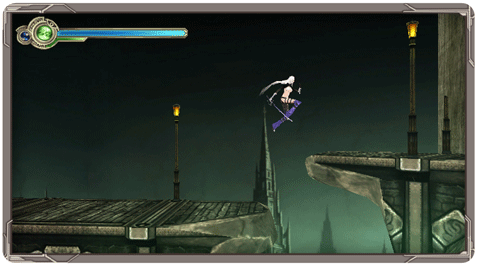
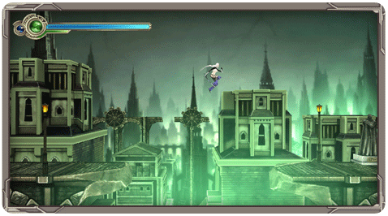
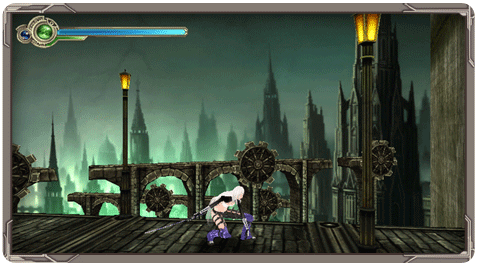

manette Wii Remote
Ce jeu utilise la manette Wii Remote tenue à l'horizontale.
croix directionnelle: Mouvement
bouton 1: Attaquer
bouton 2: Sauter
bouton A: Néokinésie
bouton +: Menu du Jeu
bouton -: Carte
manette Classic Controller
croix directionnelle: Mouvement
bouton y: Attaquer
bouton x: Lancement
bouton b: Sauter
bouton a: Néokinésie
bouton +: Menu du Jeu
bouton -: Carte
bouton L: Esquive vers la gauche
bouton R: Esquive vers la droite
Sauts
Plus longtemps vous maintiendrez appuyé le bouton 2 ou le bouton b, plus haut Celia sautera. Assurez-vous de toujours sauter à la bonne hauteur afin d’atteindre vos ennemis ou les plateformes.


S’abaisser
Si vous appuyez en bas sur la croix directionnelle et maintenez, Celia se baissera.
